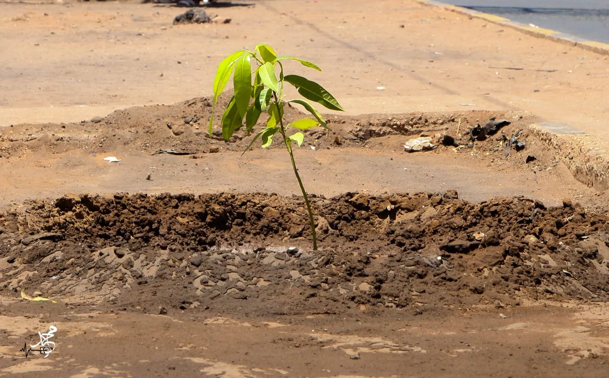
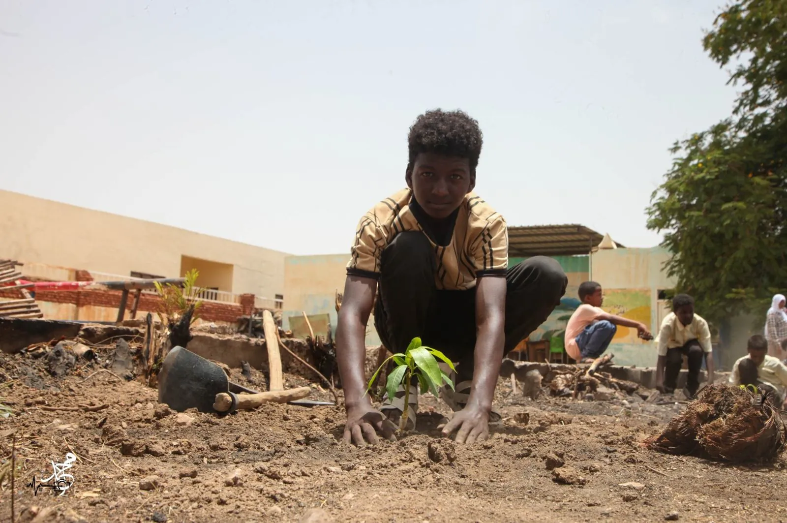
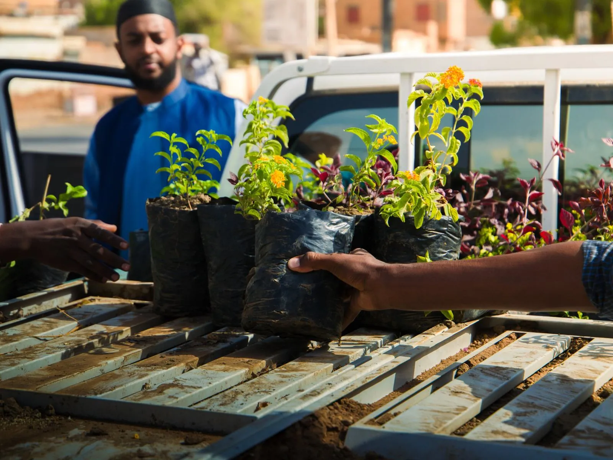

شتلة بتفرق · جامعة بحريمعرض
معرض
المبادرة
Every Frame Tells a Story.
من بذرة صغيرة بدأت الحكاية، وبأيدينا كبرت لتصنع أثراً أخضر في جامعتنا.
انزل لتعيش الحكاية ↓


01 — 03
GREEN BAHRI · UNIVERSITY OF BAHRI · 2026
GB✳
توقيع أكاديمي
جامعة بحري
كلية علوم الحاسوب والرياضيات
تم بواسطة
دفعة 23 & 24
دفعة 23 & 24
THE STORYأربعة فصول،
أربعة فصول،
وشجرة تكبر مع الحكاية.
كل ما تنزل، الشجرة تنمو وتتفرع؛ لأن الأثر الحقيقي ما بقيف في مكانه.
THE MOMENTS
لحظات تستحق البقاء.
صور حقيقية من أنشطة المبادرة، تحفظ تفاصيل الرحلة.
✳
GREEN BAHRI · شتلة بتفرقالأثر الحقيقي يبدأ
بشتلة صغيرة.
كل صورة حكاية، وكل شتلة وعد بمستقبل أخضر.
العودة إلى البداية ↑